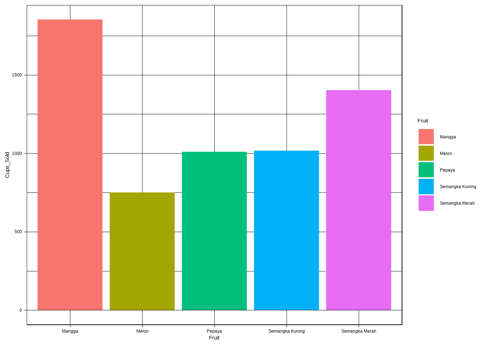
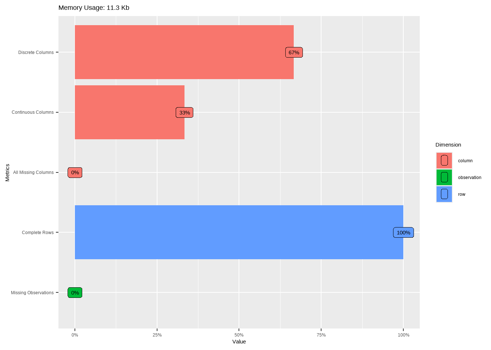
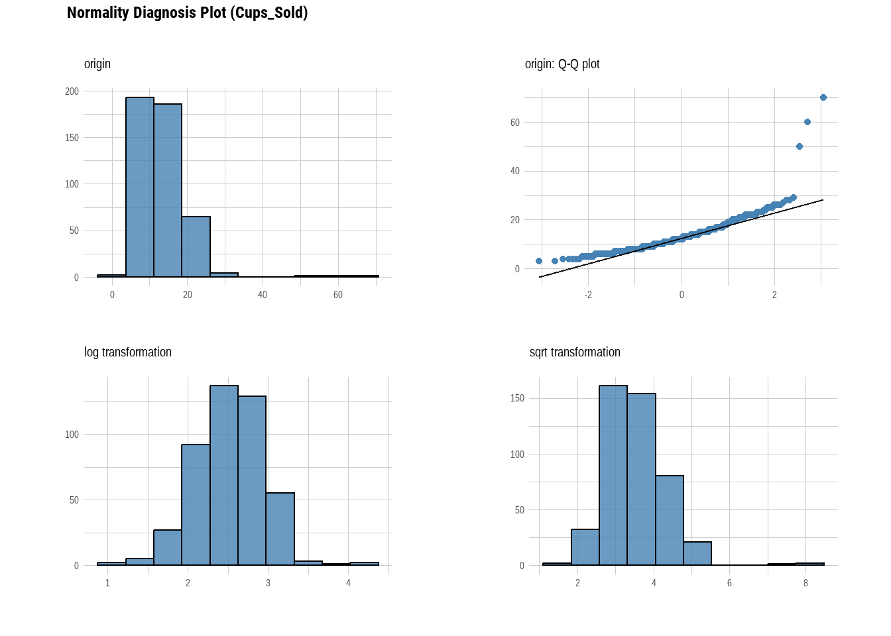
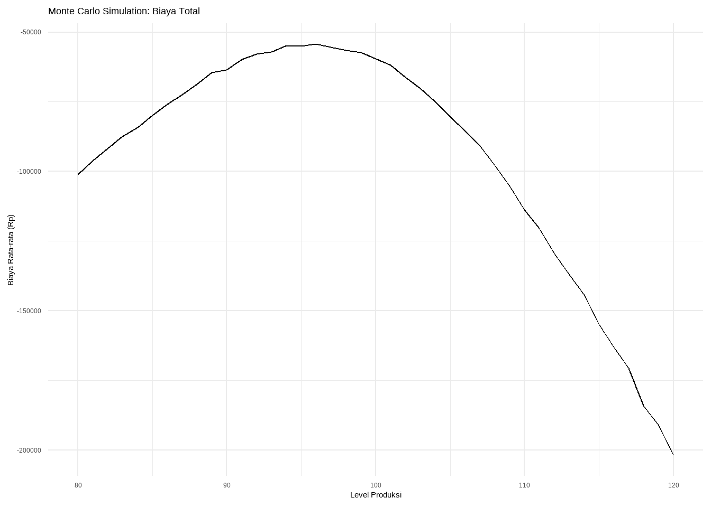

library(skimr)
library(DataExplorer)
library(dlookr)
library(dplyr)
library(lubridate)Berapa banyak cup yang harus dibuat ?
Data Analyst
Market Research
Sebuah study case melakukan estimasi..
Pada suatu hari rekan saya menanyakan pada saya :
berapa banyak cup yang harus saya buat agar tidak terlalu overstock.
Tanpa menunggu lama saya langsung meminta data last.3 Month dari data penjualan. Karena saya tidak mau membeberkan data penjualan sehingga saya meminta chat GPT untuk membuatkan data yang sesuai dengan konteks. saya juga meminta dibuatkan Outlier agar menganilasnya dengan penuh keringat. Saya menulis sperti ini pada Chat GPT
tolong buatkan saya puzle berupa penjulan cup buah potong pepaya, semangka merah, semangka kuning, mangga dan melon, berupa data penjualan yang beragam dan tolong simpoankan outlier agar bisa di cek, sehingga saya bisa melakukan anlisa, data dibuatkan dalam bentuk 3 bulan. puzlenya adalah bagaimana cara agar kita bisa menghitung berapa cup perhari interval yang kita buat agar tidak over cup dan tidk terlalu sedikit
Meskipun banyak typo tapi mbah Chat GPT ini supper duper kere, hampir saja saya mengajaknya taaruf.
dengan teknik ninjutsunya membuatkan saya code seperti di bawah ini, Mari kita jalankan sript ini di R langsung..
Sebelum itu kita harus menjalankan library biar kerja serasa lewat dijalan tol, mulussss..
# Load required libraries
library(dplyr)
library(lubridate)
# Set seed for reproducibility
set.seed(42)
# Generate dates for 3 months
dates <- seq(as.Date("2023-01-01"), as.Date("2023-03-31"), by = "day")
# Fruit types
fruits <- c("Pepaya", "Semangka Merah", "Semangka Kuning", "Mangga", "Melon")
# Generate sales data
sales_data <- expand.grid(Date = dates, Fruit = fruits) %>%
mutate(
Cups_Sold = case_when(
Fruit == "Pepaya" ~ rpois(n(), lambda = 10), # Normal sales for Pepaya
Fruit == "Semangka Merah" ~ rpois(n(), lambda = 15), # Normal sales for Semangka Merah
Fruit == "Semangka Kuning" ~ rpois(n(), lambda = 12), # Normal sales for Semangka Kuning
Fruit == "Mangga" ~ rpois(n(), lambda = 20), # Normal sales for Mangga
Fruit == "Melon" ~ rpois(n(), lambda = 8) # Normal sales for Melon
)
)
# Add outliers manually
outliers <- data.frame(
Date = as.Date(c("2023-01-15", "2023-02-10", "2023-03-05")),
Fruit = c("Pepaya", "Mangga", "Semangka Merah"),
Cups_Sold = c(50, 70, 60)
)
# Combine the data
sales_data <- bind_rows(sales_data, outliers)
# View a sample of the data
head(sales_data, 5) Date Fruit Cups_Sold
1 2023-01-01 Pepaya 14
2 2023-01-02 Pepaya 8
3 2023-01-03 Pepaya 11
4 2023-01-04 Pepaya 12
5 2023-01-05 Pepaya 11Biar gacor kita ubah type data fruit..
sales_data$Fruit <- as.factor(sales_data$Fruit)Data-data diatas akan terlihat seperti dibawah ini.
library(ggplot2)
library(tidyverse)── Attaching core tidyverse packages ──────────────────────── tidyverse 2.0.0 ──
✔ forcats 1.0.0 ✔ stringr 1.5.1
✔ purrr 1.0.2 ✔ tibble 3.2.1
✔ readr 2.1.5 ✔ tidyr 1.3.1
── Conflicts ────────────────────────────────────────── tidyverse_conflicts() ──
✖ tidyr::extract() masks dlookr::extract()
✖ dplyr::filter() masks stats::filter()
✖ dplyr::lag() masks stats::lag()
ℹ Use the conflicted package (<http://conflicted.r-lib.org/>) to force all conflicts to become errorsggplot(sales_data) +
aes(x = Fruit, y = Cups_Sold, fill = Fruit) +
geom_col() +
scale_fill_hue(direction = 1) +
theme_linedraw()
Analisis Deskriptif
Dengan data diatas apa yang akan kita perbuat, sebagai pemula statsitik saya terbiasa dengan melihat data deskripsi sehingga saya akan mencoba menganalisa deksriptif terlebih dahulu.
Dengan menggunakan skimr dan DataExplorer kita bisa menambah wawasan tentang data.
Missing value
skim(sales_data)| Name | sales_data |
| Number of rows | 453 |
| Number of columns | 3 |
| _______________________ | |
| Column type frequency: | |
| Date | 1 |
| factor | 1 |
| numeric | 1 |
| ________________________ | |
| Group variables | None |
Variable type: Date
| skim_variable | n_missing | complete_rate | min | max | median | n_unique |
|---|---|---|---|---|---|---|
| Date | 0 | 1 | 2023-01-01 | 2023-03-31 | 2023-02-14 | 90 |
Variable type: factor
| skim_variable | n_missing | complete_rate | ordered | n_unique | top_counts |
|---|---|---|---|---|---|
| Fruit | 0 | 1 | FALSE | 5 | Man: 91, Pep: 91, Sem: 91, Mel: 90 |
Variable type: numeric
| skim_variable | n_missing | complete_rate | mean | sd | p0 | p25 | p50 | p75 | p100 | hist |
|---|---|---|---|---|---|---|---|---|---|---|
| Cups_Sold | 0 | 1 | 13.31 | 6.39 | 3 | 9 | 12 | 16 | 70 | ▇▂▁▁▁ |
summary(sales_data) Date Fruit Cups_Sold
Min. :2023-01-01 Mangga :91 Min. : 3.00
1st Qu.:2023-01-23 Melon :90 1st Qu.: 9.00
Median :2023-02-14 Pepaya :91 Median :12.00
Mean :2023-02-14 Semangka Kuning:90 Mean :13.31
3rd Qu.:2023-03-09 Semangka Merah :91 3rd Qu.:16.00
Max. :2023-03-31 Max. :70.00 introduce(sales_data) rows columns discrete_columns continuous_columns all_missing_columns
1 453 3 2 1 0
total_missing_values complete_rows total_observations memory_usage
1 0 453 1359 11576plot_intro(sales_data)
Duplicated checking
sales_data_duplicated <- sales_data %>%
filter(duplicated(.))
print(sales_data_duplicated)[1] Date Fruit Cups_Sold
<0 rows> (or 0-length row.names)duplicate_buah <- sales_data[duplicated(sales_data)]
duplicate_buahdata frame with 0 columns and 453 rowsdata_no_duplicate <- sales_data %>%
distinct()
head(data_no_duplicate,5) Date Fruit Cups_Sold
1 2023-01-01 Pepaya 14
2 2023-01-02 Pepaya 8
3 2023-01-03 Pepaya 11
4 2023-01-04 Pepaya 12
5 2023-01-05 Pepaya 11diagnose(sales_data)# A tibble: 3 × 6
variables types missing_count missing_percent unique_count unique_rate
<chr> <chr> <int> <dbl> <int> <dbl>
1 Date Date 0 0 90 0.199
2 Fruit factor 0 0 5 0.0110
3 Cups_Sold numeric 0 0 30 0.0662plot_normality(sales_data)
Insight from analysis from descriptive
- Missing value hilang
- Data tidak balance (Jumlah pada buah ada yang 91 dan 90)
- Data sudah lumayan untuk di analisa.
- Terdapat beberapa outlier sehingga perlu perlakuan khususagar dataperkiraan bisa sesuai.
Berapa cup yang harus dibuat ?
Berikut adalah insight yang bisa kita dapatkan dalam pengambilan sample berapa banyak cup yang kita butuhkan.
Dengan Interval kepercayaan
Dengan interval kepercayaan, kita membutuhkan data berupa Rata-rata, standar Deviasi & Jumlah observasi perhari. Karena datanya belum ada maka kita buat terlebih dahulu.
head(sales_data, 5) Date Fruit Cups_Sold
1 2023-01-01 Pepaya 14
2 2023-01-02 Pepaya 8
3 2023-01-03 Pepaya 11
4 2023-01-04 Pepaya 12
5 2023-01-05 Pepaya 11# Menambahkan kolom hari
sales_data$Hari <- weekdays(sales_data$Date)
head(sales_data,5) Date Fruit Cups_Sold Hari
1 2023-01-01 Pepaya 14 Sunday
2 2023-01-02 Pepaya 8 Monday
3 2023-01-03 Pepaya 11 Tuesday
4 2023-01-04 Pepaya 12 Wednesday
5 2023-01-05 Pepaya 11 Thursday# Membuat rata-rata
rata_rata_perhari <- sales_data %>%
group_by(Hari) %>%
summarise(rata_rata = mean(Cups_Sold))
rata_rata_perhari <- arrange(rata_rata_perhari, Hari)
rata_rata_perhari# A tibble: 7 × 2
Hari rata_rata
<chr> <dbl>
1 Friday 13.9
2 Monday 13.0
3 Saturday 13.3
4 Sunday 14.4
5 Thursday 13
6 Tuesday 12.6
7 Wednesday 13 # Membuat data standar deviasi
sd_perhari <- sales_data %>%
group_by(Hari) %>%
summarise(Sd = sd(Cups_Sold))
sd_perhari <- arrange(sd_perhari, Hari)
sd_perhari# A tibble: 7 × 2
Hari Sd
<chr> <dbl>
1 Friday 8.66
2 Monday 5.28
3 Saturday 5.64
4 Sunday 8.73
5 Thursday 4.58
6 Tuesday 5.12
7 Wednesday 5.20# MEnggabungkan data
fiks_data = merge(rata_rata_perhari, sd_perhari, by = "Hari")
fiks_data <- fiks_data %>%
mutate(Jumlah_hari = 90)
fiks_data$Jumlah_hari <- as.numeric(fiks_data$Jumlah_hari)
head(fiks_data) Hari rata_rata Sd Jumlah_hari
1 Friday 13.90909 8.662434 90
2 Monday 13.01538 5.278175 90
3 Saturday 13.30000 5.639750 90
4 Sunday 14.37313 8.734876 90
5 Thursday 13.00000 4.582576 90
6 Tuesday 12.55385 5.123569 90Interval kepercayaan
Cup_interval <- fiks_data %>%
mutate(
error = 1.96 * (sd / (sqrt(Jumlah_hari))), # Margin Of Eror 90 = jumlah hari
lower_ci = rata_rata - error,
upper_ci = rata_rata + error
) Hari rata_rata sd Jumlah_hari error lower_ci upper_ci1 Friday 13.90909 8.662434 30 3.1008 10.8083 17.0098 2 Monday 13.01538 5.278175 30 1.8907 11.1247 14.9061 3 Saturday 13.30000 5.639750 30 2.0160 11.2840 15.3160 4 Sunday 14.37313 8.734876 30 3.1270 11.2461 17.5002 5 Thursday 13.00000 4.582576 30 1.6407 11.3593 14.6407
Dengan data di atas kita bisa membuat interval berapa banyak cup yang akan kita buat perhainya.
Dengan Simulasi Monte Carlo
Jika overstock kita mengalami kerugian sebanyak
-10.000jika lost sales kita rugi sebanyak5.000. Sehingga berapa banyak yang harus kita packing? Jika rata-rata =100, dan sd =10? Jika kita melakukan estimasi 80-120 pack berapa besar peluangnya ?
# Parameter simulasi
set.seed(123) # Untuk hasil yang dapat direproduksi
mean_demand <- 100 # Rata-rata permintaan harian
sd_demand <- 10 # Standar deviasi permintaan
cost_overstock <- -10000 # Biaya overstock per cup
cost_lost_sales <- -5000 # Biaya kehilangan per cup
num_simulations <- 10000 # Jumlah simulasi
production_levels <- seq(80, 120, by = 1) # Level produksi yang diuji
# Fungsi untuk menghitung biaya total
calculate_total_cost <- function(production, demand) {
overstock_cost <- ifelse(production > demand, (production - demand) * cost_overstock, 0)
lost_sales_cost <- ifelse(production < demand, (demand - production) * cost_lost_sales, 0)
return(overstock_cost + lost_sales_cost)
}
# Hasil simulasi
results <- data.frame(Production = numeric(), AverageCost = numeric())
for (production in production_levels) {
simulated_demand <- rnorm(num_simulations, mean = mean_demand, sd = sd_demand)
total_cost <- sapply(simulated_demand, function(d) calculate_total_cost(production, d))
avg_cost <- mean(total_cost)
results <- rbind(results, data.frame(Production = production, AverageCost = avg_cost))
}
# Menampilkan hasil simulasi
library(ggplot2)
ggplot(results, aes(x = Production, y = AverageCost)) +
geom_line() +
labs(title = "Monte Carlo Simulation: Biaya Total",
x = "Level Produksi",
y = "Biaya Rata-rata (Rp)") +
theme_minimal()
Dengan plot diatas kita bisa memperkirakan bahwasanya dengan membuat 90-100 cup maka kita memeliki kerugian paling minimal.
Ini masih belum sempurna, namun kita bisa menyempurnakan jika ada project.